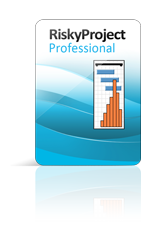

Tarkvaraarenduse elutsükkel koosneb erinevatest etappidest, milles tehtavad tegevused on väga
erinevad, kuid igas etapis on siiski arendatava tarkvara jaoks vajalikud tegevused.
Need tegevused
lahendatakse või tehakse ära tööriistadega, mida nimetatakse (inglise keeles CASE-vahenditeks)
tarkvara reaaltehnoloogiaks.
CASE-vahend on kasutusel erinevates etappides ja lubab ära teha arendajal tegevusi nagu Nõuete analüüs,
erinevate protsesside voolu kujundamine, ajakava seadmine, dokumentatsiooni genereerimine, versiooni
haldus (olgu siis kas dokumentatsioonile endale, või arendatavale tarkvarale), arendustöö enda teostamine
arendusmeeskonna ja arendustöö enda organiseerimine, prototüübi genereerimine jpm.
Sellel eesmärgil kategoriseeritaksegi CASE-vahendid kahte peamisesse kategooriasse.
| Arendusmudeli samm | Sammus tehtavad tööd | Vastav CASE-vahend | CASE vahendi kirjeldus |
|---|---|---|---|
| Eesmärkide seadmine |
|
 |
Atlassian Jira on suurepärane probleemide jälgimise alal, võimaldades meeskondadel probleeme tõhusalt
tabada, tähtsuse järjekorda seada ja lahendada. Jira abil saate luua kohandatavaid probleemitüüpe, nagu vead, ülesanded või kasutajalood, ja määrata need meeskonnaliikmetele. Iga probleemiga võivad kaasneda asjakohased üksikasjad, manused, kommentaarid ja olek, mis võimaldab selget suhtlust ja koostööd kogu probleemi lahendamise protsessi vältel. |
| Riskide hindamine ja maandamine |
|
 | RiskyProject on projektijuhtimise riskianalüüsi tarkvara, mida kasutatakse riskide hindamiseks, mõju kvantifitseerimiseks ja riskimaandamisstrateegiate planeerimiseks |
| Arendus ja valideerimine |
|
 |
Enterprise Architect on CASE-vahend, mida kasutatakse tarkvarasüsteemide modelleerimiseks ja projekteerimiseks. See toetab UML-diagramme, äriprotsesside modelleerimist ja süsteemi arhitektuuri kirjeldamist. Tööriist aitab analüüsida nõudeid, vähendada arhitektuurseid riske ning toetab arendust kogu tarkvara elutsükli vältel. |
| Planeerimine |
|
 |
Microsoft Project on CASE-vahend, mida kasutatakse ajakavade, tööde, ressursside ja riskide planeerimiseks. See võimaldab koostada Gantti diagramme, jälgida projekti edenemist ning planeerida tegevusi spiraalmudeli planeerimise faasis. |
Atlassian Jira-t olen juba varasemalt kasutanud Kogukonna Projekti ainetunnis.
Viited infole: Allikas (eucip)